Zogra Round
Client
- Student Project
Role
- Typeface Design
- Type Specimen
- OTF File
The Challenge
First-time font creation for a script that is over 1,100 years old. Can a 1,100-year-old Slavic script work in today’s digital sphere? How do I create an approachable modern variation of an ancient religious script? This was my first run at designing a typeface. It is a very in-depth project that people take months to years to complete. I had 14 weeks, so efficiency and sticking to the plan was essential.
The Solution
A two weight font family that has a home in the 21st century. The aesthetics of the typeface is a rounded grotesque sans serif take on a script that was created in 863 AD. Its modern feel gives it a soft and friendly technical character.
ORIGINS OF GLAGOLJCIA
The Glagolitic script is the oldest known Slavic alphabet. It was created in the 9th century by Saint Cyril, a monk form present-day Greece. He was sent by the Byzantine emperor Michael III to great Moravia (Czech Republic, Slovakia, Poland, Hungary, and Serbia) to spread Christianity among the West Slavs.
They were tasked in translating liturgical books into old Slavic language that was understood by the general population. The words could not easily be written using either Greek or Latin, so Saint Cyril invented a new script based on the local dialect of Slavic tribes from the Byzantine Theme of Thessalonica (military-civilian province).
STRATEGY
I had to decide what style to design the typeface in. At first, I was trying to decide between serif and sans serif. I also played with the rounded typeface, and really liked the feel of it. It is a sans serif approach that was less geometric, and cold, but still kept the technical feeling.
DESIGN
I wanted to create a version of the Glagolitic script that I have not previously seen before. I have seen versions that resemble old roman letters carved in stone, and sans serif versions that resemble a modern typeface. I wanted this font family to float somewhere in between.
Since this was my first typeface design project I faced a few constraints. There are lot of decisions to be made early on that have an effect on the project as a whole. I also had to learn a new program to get into the fine tuning of the font.
Started sketching basic letterforms and parts of the letters, to get an idea of the visual flow
I narrowed it down to 3 different styles I was willing to try to design
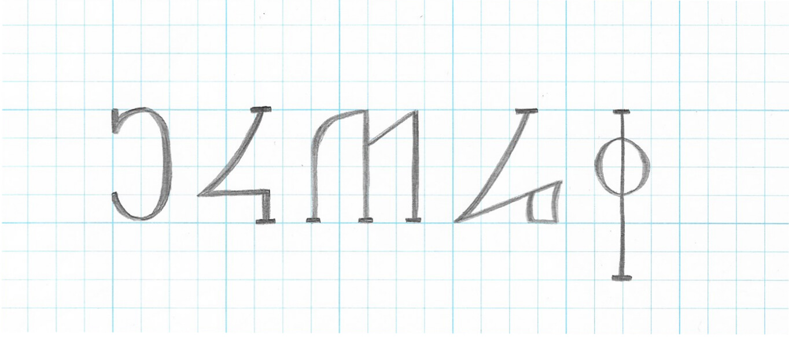Slab Serif
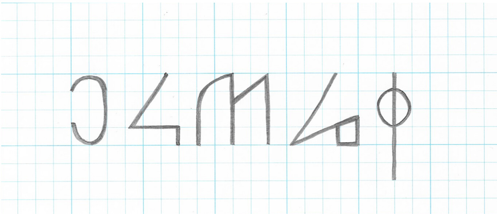Sans Serif
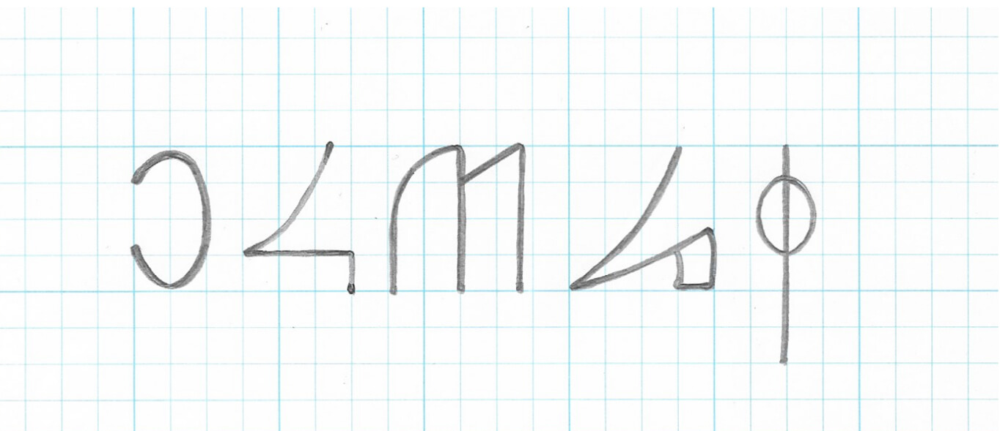Rounded Sans Serif
After deciding on the sans serif rounded style, I had to narrow down how the corners would be rounded
I referenced other typefaces to get a feel of the size distribution

This helped me to get a feel of how the font would flow in comparison to other fonts
I put the alphabet into illustrator and got a good outline of how it will look
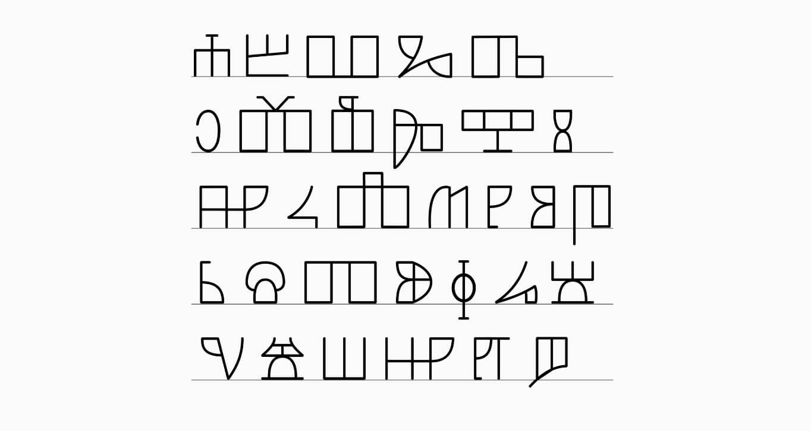 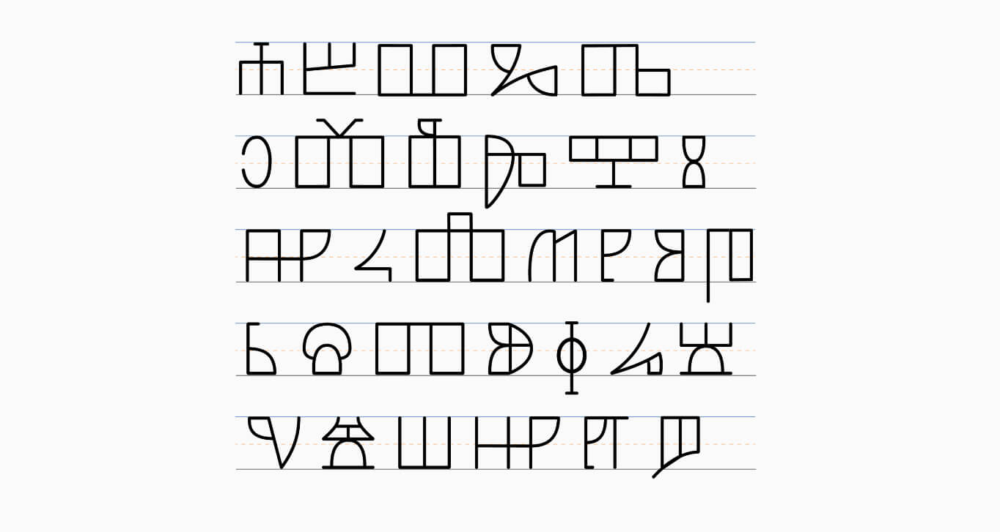I transferred the font into FontLab IV to do fine tuning and create the type file
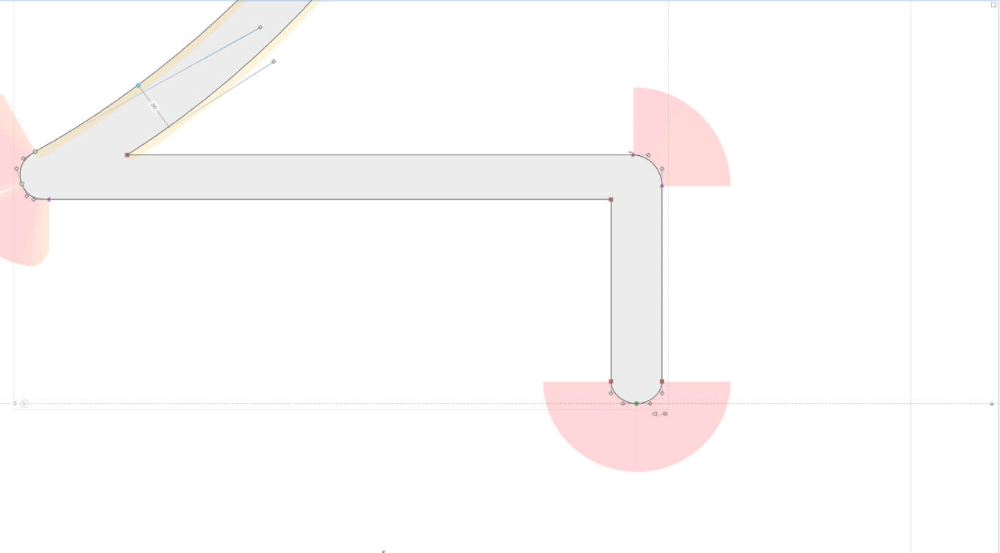 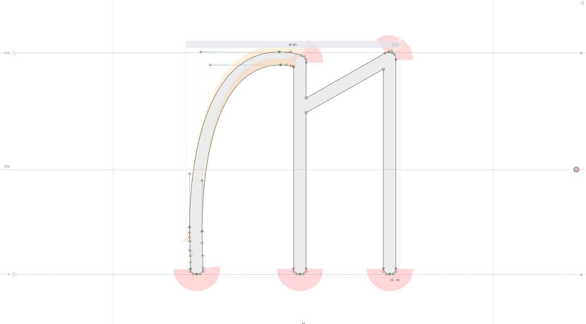 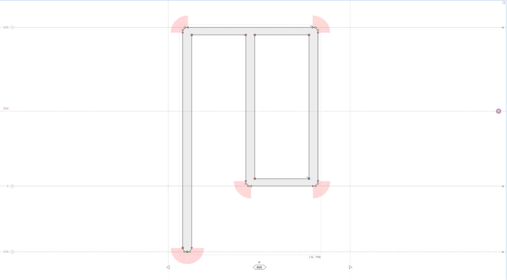 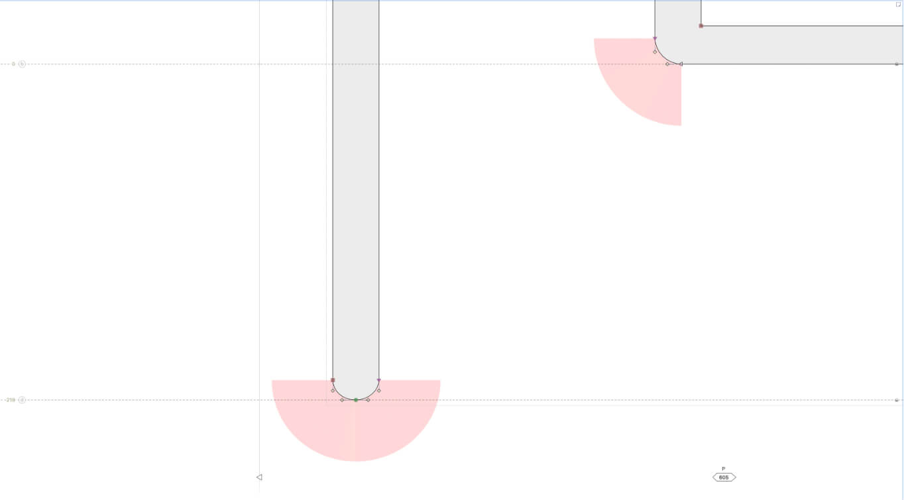 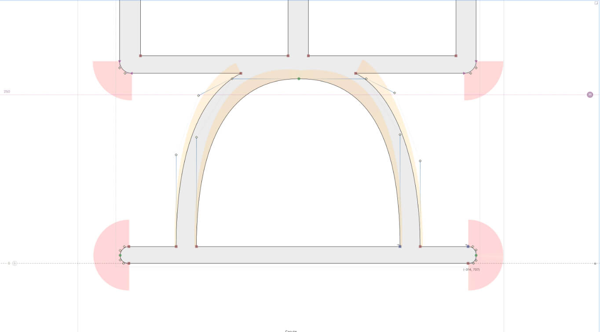 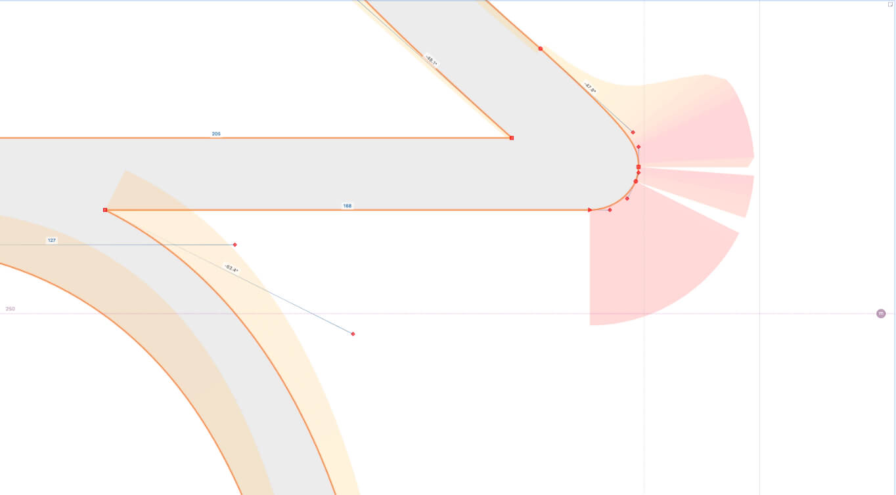Type Specimen for Zogra Round